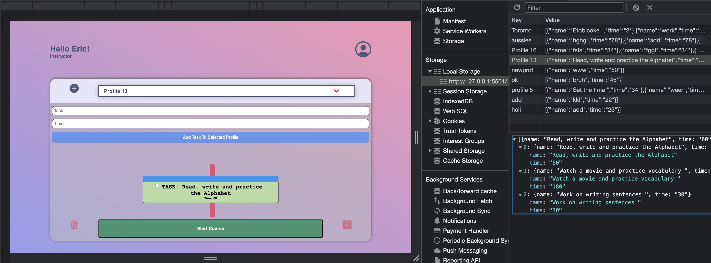
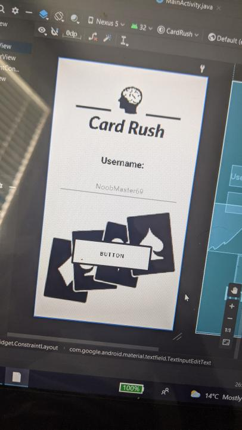
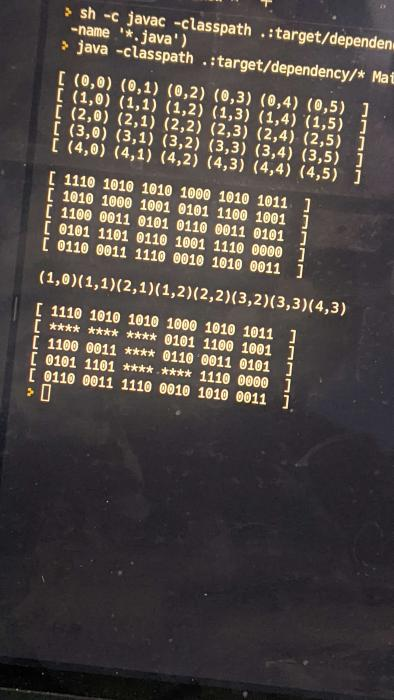
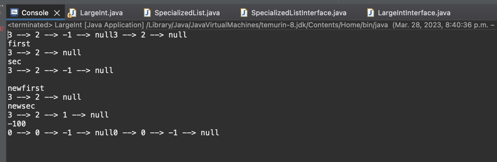
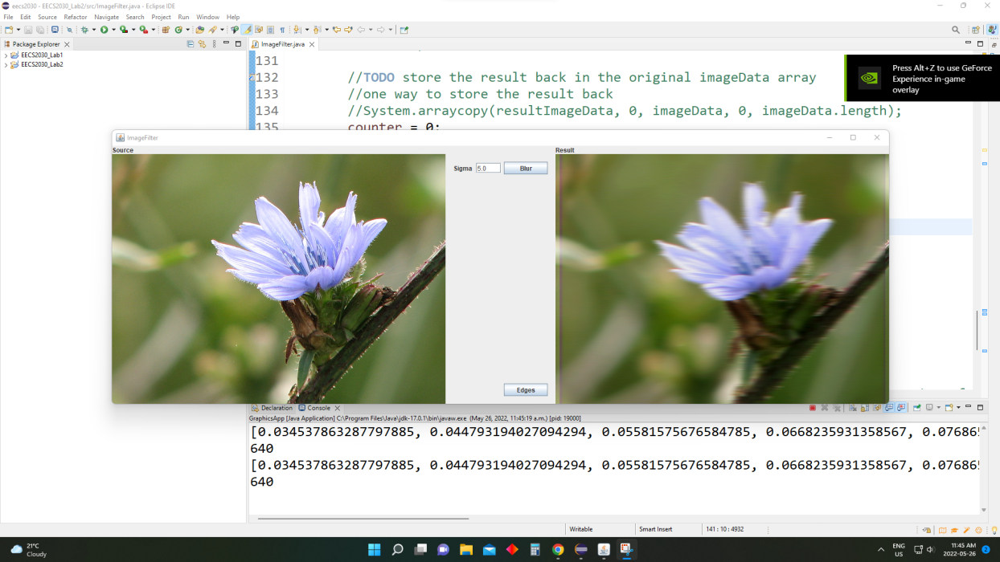

Hi, I am Kakshil Patel
Software Developer & Bioinformatician
Software Developer & Bioinformatician
I have frontend experience in creating applications and websites. Can develop a range of different specified apps and websites for clients.
Having had past experience in teaching students frontend and backend programming, I can offer tutoring services to train beginner students in HTML, Css, Javascript, Scratch, Python, Java, Arduino etc.
As a double major in biology and computer science, I have a significant background in the sciences. I offer tutoring services in Biology, Chemistry and Math for all grade levels including Biology University Level.
York University Student: Honours BSc. Double Major in Computer Science & Biology
I am a 5th year York University student completing a double major in Computer Science and Biology, with a passion to excel within the synthesis of the established tech industry and the rapidly emerging biotech field. Specifically interested in incorporating computational skills through genomics and bioinformatics for analyzing the exponential amount of future biological data and working in sync towards the digitization of biology.
Resume
Oct 2022 - Present
Developed a language learning app using the Electron (Node.Js) platform which allows users to learn multiple languages.
Created an animated task specific progress bar App as per UX design requirements.
Implemented a feature that allows Tutors to add and delete tasks as per class requirements, showing the time limit of each task.
Built the app in such a way that new classes can be created and added to the dropdown list, while old classes can be edited or deleted.
Designed a feature that contains each task and time in a specific class in its own node/bubble which gets added/deleted/edited from the progress bar upon Tutor request.
Utilized a fully integrated local storage API to store and access all information.

Sept 2022- present
Technologies: Python, Java, HTML, CSS, Javascript, Arduino
Trained students from different grade levels in various programming languages including Python, Java, HTML, CSS, Javascript, and Arduino.
Facilitated engaging and interactive lessons to encourage a productive learning environment.

June - Sept 2021
Gained experience through the completion of courses in genomics, transcriptomics, metagenomics, epigenetics, machine learning for biomedical science as well as coding in python and R
Completed projects and assignments on various literature and published papers ranging from viral diseases and cancer to agricultural crop output in context of climate change.
Completed a research project publication in the domain of bioinformatics
using computational biology, and statistical tools for data analysis.
Using non small cell lung carcinoma datasets from ncbi, performed transcriptomal pipeline analysis to identify and contrast biomarkers in regards to different factors such as patient age, sex, smoking; for future applications in early detection diagnostics using genomics.
Developed an application which functions as a memory assessment tested through the functionality of a game. User is tested for memory and relocation of matching values that they identify under a certain period of time through which they try to obtain the maximum points

Developed a calculator which uses 2 linked lists to store number values which are then used to perform addition and subtraction, and return a linked list sum or difference.

Developed a calculator which uses 2 linked lists to store number values which are then used to perform addition and subtraction, and return a linked list sum or difference.

A program that takes an image as an input, applies different kernels and uses convolution to return the blurred image and an edge detected image in black and white.
